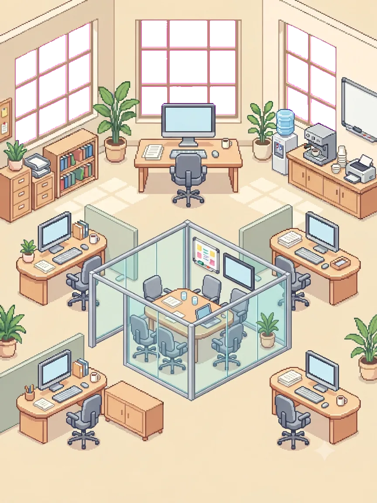

좋은 저녁이에요
모니터링 중
채팅에서 맡긴 일은 작업실에서, 한도는 위 파티 바에서 확인할 수 있어요.
여기는 현황을 보는 화면이에요. 실제 작업 지시는 피클 채팅에서 해 주세요.
모션
ON

시간·날씨 미리보기
시간대
날씨
실시간으로 돌아가려면 ‘실시간’을 골라 주세요.
캐릭터를 누르면 그 비서의 현황이 열려요
회의실
채팅에서 오간 주요 안건과 협의 내역을 모아 보여드려요.
안건을 정하고 정리하는 건 피클 채팅에서 해요. 여기서는 진행 상태만 확인해요.
아직 올라온 안건이 없어요.
채팅에서 안건이 정해지면 여기에 보여요.
작업실
맡긴 일을 현재·예약·완료로 나눠 확인해요. 여기는 보기만 하는 화면이에요.
현재는 지금 하는 일, 예약은 단발·정기 일감, 완료는 끝난 일이에요. 예약 시각이 지났는데 끝나지 않으면 확인 필요로 올라와요.
0 / 0
아직 동기화된 일이 없어요.
채팅에서 일을 맡기면 여기에 올라와요.
비서현황
다섯 사람의 지금 상태·남은 일감·토큰 잔여를 한눈에 봐요.
동기화·안내
현황판이 어디서 값을 받는지, 한도는 언제 차는지 정리해 두었어요.
동기화 상태
- 마지막 동기화
- 대기 중
- 받은 작업
- —
- 받은 안건
- —
- 작업실 구분
- 현재 · 예약(단발·정기) · 완료
- 데이터
- data/office-state.json
채팅에서 맡긴 일·안건·한도는 별이가 이 파일에 적어 두고, 이 화면은 열 때마다 그 파일을 읽어요. 파일이 없거나 네트워크가 막히면 마지막으로 받은 값으로 보여드려요.
한도 회복 주기
~ 는 추정치클로드는 실제 화면에서 확인한 실측값이고, 나머지는 시킨 작업 수로 어림한 추정치예요. 회복 주기는 각 AI의 초기화 시간을 따른 거예요.
모니터링 사용법
- 실제 작업 지시는 피클 채팅에서 한 줄로 해요.
- 이 화면에서는 진행 상태·한도·모임만 확인해요.
- 작업실은 맡긴 일을 현재·예약(단발·정기)·완료로 나눠 보여줘요.
- 진행률은 예약을 빼고 현재·완료로만 계산해요.
- 값이 늦으면 새로고침을 눌러 다시 읽어요.
아이폰 홈 화면에 추가
- Safari로 이 페이지를 열어요
- 아래 공유 버튼을 눌러요
- ‘홈 화면에 추가’를 골라요